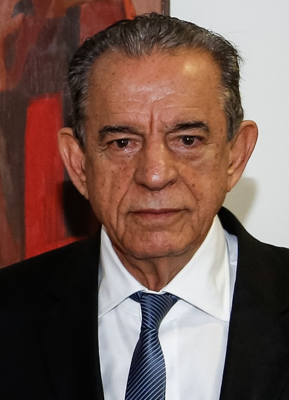

Nome: Iris Rezende
Número: 15
História: Iris Rezende Machado é um político brasileiro, filiado...

Nome: Vanderlan Cardoso
Número: 55
História:Vanderlan Vieira Cardoso é um empresário e político brasileiro, filiado...
Nome: Maguito Vilela
Número: 25
História: Luís Alberto Maguito Vilela é um advogado e político brasileiro...